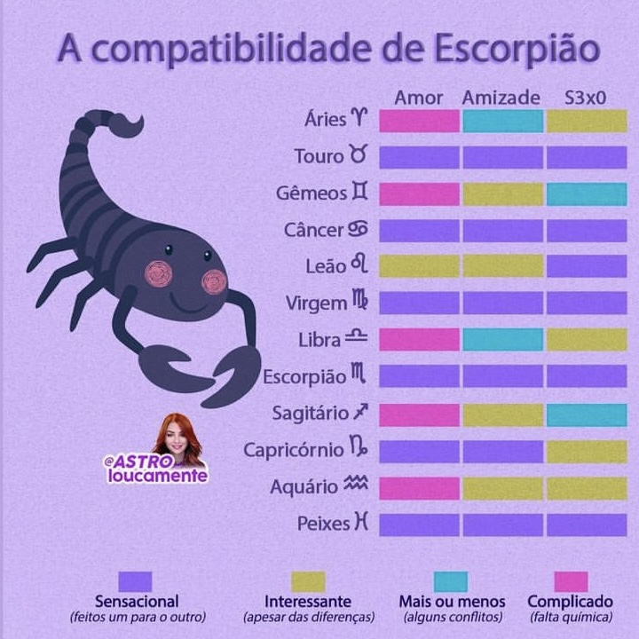
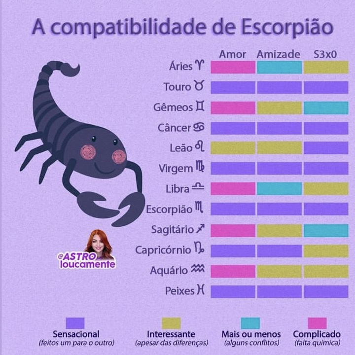
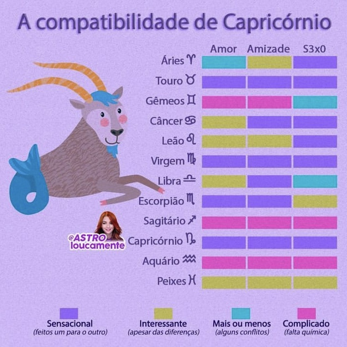
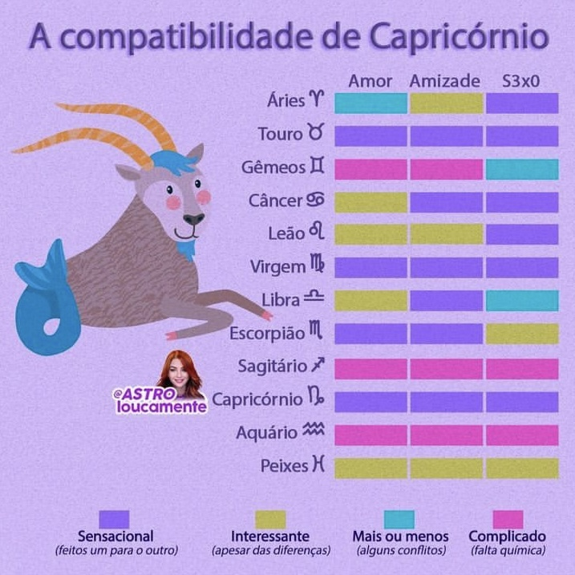
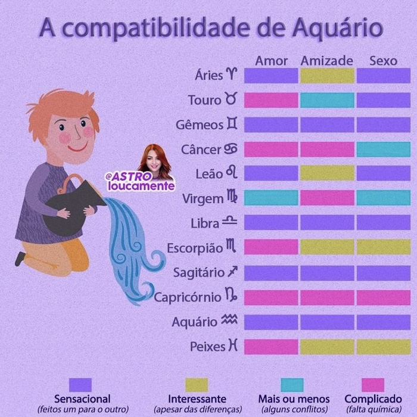
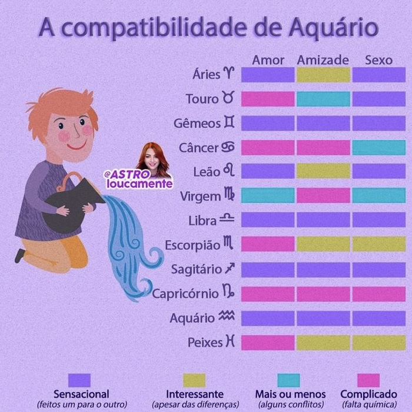

Pioneirismo, Coragem e Autonomia
Nascidos entre 21 de março e 20 de abril
Pessoas com o Sol em Áries tendem a ter grande foco em si mesmas, em suas próprias conquistas e desejos, sentindo internamente que precisam seguir o seu próprio caminho. Geralmente, não gostam muito que lhe digam o que fazer. É comum a auto referência, a ideia de que está sendo provocada, desafiada, intimidada, mesmo que não esteja acontecendo nada do lado de fora. À medida que evoluem - e se evoluírem psicologicamente, ou seja, complexificarem e sofisticarem sua percepção de si e do entorno -, aprendem que não são o centro do mundo, mas parte de uma organização maior. É da responsabilidade dos nativos aceitarem esta ideia, de que fazem parte de um grande grupo que abrange outras pessoas além de si, e aqueles que não desenvolvem esse tipo de maturidade podem até ter comportamento exigente, egoísta e dominador. Parece haver uma questão dissipativa envolvida no processo. O sistema, o corpo, cria mais energia do que precisa e assim, existe uma pressão para extravasar tais sobras. Daí, reflexos ficam muito ativos, existe pressão para interagir, falar, se envolver e muitas vezes, dramatizar.
Nativos de Áries (que nasceram quando o sol transitava pelo signo de Áries) prosperam no desafio, gostam de competir (e ganhar). Serem combativos faz parte do seu modo de operação essencial e os arianos considerados mais "raiz" expressarão prontamente suas frustrações sem tanta reflexão, pois muitas vezes não sabem como lidar com a energia em demasia, não conseguindo filtrá-la direito. Isso não significa que eles querem ferir seus sentimentos, apenas falam sem que suas ideias estejam totalmente desenvolvidas. Se consideram assertivos, francos, diretos, espontâneos, honestos e que manifestam com intensidade o momento em que estão vivendo na raiva ou no amor. Existe, portanto, uma carga de passionalidade envolvida. Embora gostem de companhia, de vida, agito, pessoas no entorno, tendem a ser mais independentes e não têm muito medo da solidão. Sua força vital tanto pode ser usada para inspirar os outros ou pode ser voltada para dentro, refletindo, se auto motivando e buscando apenas suas próprias necessidades. Podem portanto, serem independentes e auto suficientes.
Tendem a ser naturalmente entusiasmados e prontos para atividades diversas, sendo muito bons para animar e dar vida a qualquer ambiente ou evento. Como possuem uma essência bastante vivaz, podem ocorrer ímpetos auto referentes, estes podem ser apenas o resultado de um descuido comportamental momentâneo e nem sempre é uma indelicadeza intencional. Ideias e projetos criativos também parecem brotar com frequência da mente das pessoas de componente Áries evidente, que também tendem a ser mais corajosas, ter bastante energia, serem opinativas, descomplicadas, diretas, entusiastas, independentes, impacientes e teimosas, sempre dispostas a enfrentar novos desafios. Mesmo assim, se bem gerido e consciente, a pessoa pode ter todas essas características e ainda ter um temperamento bem proporcionado e de bom tom.


Touro é a energia que está envolta aos pés no chão, que se conecta à matéria. É quando o bebê dá seus primeiros passos para tocar, cheirar e sentir tudo ao seu redor. Desta forma, Touro se refere aos instintos básicos e simples. Dormir, comer, o cheiro, o toque físico, o gosto, os 5 sentidos, portanto. Como decorrência, comer, dançar, sentir, enfim, absorver os estímulos fisicamente está intimamente ligado às características de manifestação deste componente. Por ser uma energia voltada para o que é concreto, vibra de forma mais compacta, densa e fixa. Todo esse direcionamento material pode até trazer limitações, mas também traz segurança, valorização e o poder de realizar e manter.
Paciência, praticidade e sensualidade também fazem parte do leque de qualidades de Touro. Porém, administrar esta natureza pode implicar em abrir portas para teimosia, rigidez e possessividade, transformando sentimentos de lealdade em ciúme e materialismo exacerbado. Pelo desejo do prazer fácil, pode haver vontade de acumular e consumismo para compensar adversidades e frustrações, podendo criar problemas de espaço ou rombos financeiros desnecessários. Assim, estudar os desejos, os instintos, o prazer pessoal, de onde nascem e porque nascem, pode ser um meio de lidarmos de forma inteligente com os instintos e emoções básicas para não sermos controlados por eles. Administrar com maior sucesso as características fundamentais deste componente astrológico proporciona harmonia e estabilidade, confiança, autocontrole e maior clareza de propósitos, que, embora possam ser alcançados de uma forma mais lenta, tendem igualmente a serem mais sólidos.
Pessoas com ênfases em Touro são capazes de realizar muitas coisas por conta da sólida capacidade de dar prosseguimento a projetos ou ações em que outros tenham perdido a paciência ou a energia para continuar. A persistência portanto se torna uma característica típica. Podem ser cuidadosas e pacientes quando tentam realizar algo em que acreditam ou quando lidam com pessoas com quem realmente se importam e se sentem à vontade. Não são muito afeitas a surpresas ou mudanças o tempo todo, e gostam quando têm tempo suficiente para se preparar, seguindo uma agenda prática e bem planejada.


O setor de Gêmeos em Astrologia representa a mente começando a aprender, a descobrir e a se comunicar, mesmo que ainda não tenha noção da profundidade das coisas assimiladas. O interesse é em pegar e repassar rapidamente pedaços de conhecimento sons, palavras, associações entre objetos, associações de processos, observações de repetições e também os conhecimentos soltos no ar. O pensamento não é fruto da emoção. Pensamentos implicam em habilidades discriminativas, cognitivas, linguísticas, lógicas, retóricas lexicais e conceituais, em um esforço para dizer o indizível: emoções, instintos, sensações físicas, etc. Assim, é um esforço para se tentar representar o inconsciente.
Este setor / signo está ligado a mente consciente. Se relaciona com o que se entende e propaga a informação que vem em grande fluxo e quantidade, mas nem sempre com qualidade e bom filtro. O importante é buscar novidades, repassar, descartar, recuperar, reciclar, vender, trocar, comprar e buscar novamente, como em um ciclo interminável. Desenvolver o intelecto e buscar conhecimento de forma incessante são as características básicas de Gêmeos, geradas pelas necessidades de adaptabilidade e preservação. Intercambiar conhecimento significa renovar constantemente as informações.
Onde quer que haja a manifestação deste componente quando em evidência em um mapa de nascimento (mapa astral), ele leva a leveza, curiosidade e dualidade - como o próprio nome do signo sugere, assim como o próprio ar em movimento. A imagem de Gêmeos foi colocada para representar duas forças análogas (gêmeas, da mesma origem, muito semelhantes, etc.) que estão lutando ou transferindo o poder de controlar as forças da natureza - cada gêmeo controlaria uma estação. Nesta transição, existe a dualidade, a incerteza e a indefinição. Assim, este componente inspira curiosidade, expressão, comunicação, inteligência e adaptabilidade pode onde passa, porém, como em todos os espectros de comportamento e psicologia, uma gestão não muito bem conduzida pode carregar inquietação, ceticismo, instabilidade, dispersão improdutiva e insensatez. Administrar este componente astrológico significa procurar uma melhor administração e convivência com as contradições propostas pela intuição e lógica, muitas vezes excludentes.


Câncer nos convida para reflexão, ao agrupamento, a noção de ancestralidade e a uma lembrança do passado. As observações feitas para este componente nos mostram interesses voltados às ideias de que, o presente é uma dádiva do passado, em que as memórias do que já foi vivido são fundamentais para fortificar raízes e seguir em frente. O antes é tão importante quanto o agora. Parece haver forte presença das atividades límbicas (cérebro paleo mamífero em neurociência) que armazena as memórias emocionais, de infância e de família, carregadas de cargas subjetivas.
Tais registros inconscientes do passado são a base das características da natureza canceriana (ou de ênfase deste setor no mapa natal), e isso inclui todas as informações das várias gerações que já passaram. O passado é uma matriz de aprendizado, conferindo ao presente significado e sentido para prosseguir em frente, e as pessoas com ênfase neste setor consegue entender isso de uma forma mais natural. Nesse estágio, o Ser busca então se fixar, nutrir e ser nutrido. O intuito é o de "crescer", tal qual uma árvore em direção ao céu mas sem deixar as raízes sobre as quais se ergue. Uma ênfase neste setor, cria um senso e necessidade de um apoio familiar necessário para o salto em direção ao futuro. Um certo olhar conservador, a intuição, sensibilidade, nostalgia, memória e instinto cuidador fazem parte das características luminosas de Câncer.
Porém, a administração não bem gerida deste componente tem se demonstrado como características infantis, manipuladoras e carregadas de sensibilidade excessiva. Estas características parecem típicas de uma certa recusa na aceitação do fim da infância e das fases narcisistas da criança. As características com potencial para a generosidade podem se transformar em dominação e possessividade, como se os genitores e os demais membros da família devessem uma eterna dedicação, onde o nativo exige e requer demandas emocionais incompatíveis com a sua idade biológica. Sonhos podem virar fantasias delirantes e o romantismo pode se tornar chantagem emocional. O mundo interno das emoções parece sobrepor-se às possibilidades do mundo externo.


Neste componente astrológico existe um certo apoderamento de como nos distinguimos dos outros seres em complexidade e possibilidades e, com isso, se achando único, especial. De fato, somos, mas todos somos e existem bilhões de pessoas com estes potenciais. Por isso, sem uma reflexão mais profunda sobre a condição humana, há um potencial para o ego ser mais inflado e através da sua autoafirmação no mundo, este pode lhe trazer um prazer grandioso, magnânimo. Por conta desta natureza, sua percepção psicológica tende a torná-lo centro de tudo e às vezes, utiliza-se apenas a auto referência para se medir o mundo, o que pode ser entendido muitas vezes como uma forma psicologicamente autoritária, dominadora, ditatorial ou egocêntrica.
Quando em desequilíbrio, ou sem um trabalho interno, pessoas com Leão em evidência no Mapa Astral acabam olhando apenas para o próprio umbigo, podendo ser egocêntricas, fazendo apenas o que as interessa. Também podem ficar exigentes, intolerantes e um tanto desejosas de que coadjuvantes possam assumir compromissos menores ou menos relevantes para ela e para seus projetos.
Se as características estiverem bem trabalhadas, manifestas e proporcionadas, e estiverem em harmonia ou usada de forma positiva, podem desenvolver seus potenciais de forma mais natural, trazendo generosidade, calor humano, lealdade, autonomia, criatividade, exuberância, idealismo, otimismo, expansividade, romantismo e segurança, bem como a autoconfiança aumentando seu poder de intervenção, estendendo e compartilhando tudo isso para a vida de quem está ao redor.


Pessoas com o Sol em Virgem são em geral mais metódicas, analíticas, sistemáticas, servis e pontuais, com uma grande (e nervosa) energia mental atrelada à sua essência. Quando operando em harmonia, tal caracterologia impulsiona os nativos a distinguirem tudo com mais precisão, geralmente com uma grande dose de bom senso e humildade, além de toná-los mais práticos, detalhistas, trabalhadores e prestativos. Signos mutáveis como Virgem são os mais flexíveis e adaptáveis do zodíaco. Virginianos (ou pessoas com ênfase neste signo) têm um talento nato para compreender o que precisa ser feito, sendo bastante detalhistas e bons em trabalhos que exigem ser multitarefa. São instintivamente mais sensíveis às necessidades dos outros e costumam se adaptar bem a diferentes pessoas e situações, sempre tentando encontrar formas de se sentirem úteis.
Muitos virginianos ajudam as pessoas sem a necessidade de obter uma recompensa por isso, porém, alguns podem bancar o mártir e demonstrar lamentações quando sentem que sua ajuda ou aconselhamento são ignorados. Eventualmente, tendem a agir com uma certa prestatividade inconveniente. É bom se ater a este detalhe, pois, ajudar alguém não significa que você tenha que forçar a pessoa a alcançar os seus conceitos de perfeição.Como caracterologia, temos também a presença de um certo idealismo, finalidade e objetivo a ser atingido para haver um repouso final, um estado de nirvana ou completude, ou mesmo do utópico conceito de perfeição.
A forma que utiliza para atingir tais objetivos, não raro é o contrário do seu signo oposto, Peixes. Ele foca os defeitos, as mazelas, os problemas, os erros, os pequenos detalhes que maculam, as ordens que poderiam ser melhoradas segundo suas regras e controles pessoais para exatamente eliminar tais defeitos.


O signo de Libra (ou a ênfase neste componente) carrega uma energia cooperativa, imparcial, sociável, diplomática, democrática, harmonizadora e amistosa. Porém, pode ter de administrar outros aspectos como ser dual, fútil, apático, inconstante e indeciso - o sábio se torna pedante, o intelectual fica volúvel e o pacificador fica indeciso e prefere não se comprometer, se abstendo de decisões importantes, caso não tenha se aprofundado no si mesmo (self) e lidado com seus potenciais.
Equilibrar e gerir as características de Libra traz tolerância, devoção, solidariedade e justiça. Significa estar aberto às ideias dos outros e aprender a identificar as informações necessárias para tomar a decisão correta. Situado em oposição a Áries, Libra busca equilíbrio, harmonia e companheirismo, ao contrário dos valores da individualidade, da luta pela hegemonia e liderança na relação, características de seu signo oposto, Áries.
Pessoas de Libra (ou com ênfase neste signo) são muito (às vezes, extremamente) sociáveis. É bem raro encontrar um nativo antissocial. Como gostam e valorizam muito a interação humana, pode ser difícil ficarem sozinhos, sentem que precisam compartilhar suas experiências com alguém. Libra é a socialização do Ser e uma natureza que inspira um bom senso de justiça. É a balança que equilibra e politiza.


Embora sempre envolvidos de alguma forma a tudo o que é oculto, interessante, profundo ou misterioso, nem escorpianos passam a vida toda refletindo sobre tais coisas, embora tenham um talento especial para a psicologia e investigação. São dotados de uma poderosa intuição, um grande magnetismo pessoal e uma tremenda percepção da natureza humana. De sentimentos mais contidos, interiorizados e intensos, a energia escorpiana se exterioriza através do arquétipo solar (ou outras ênfases como a Lua, astros pessoais e ângulos) com uma grande obstinação. À primeira vista, prefere conduzir seus objetivos de modo secreto ou discreto, intenso e focado, controlando (ou manipulando) as coisas ao seu redor. A sinceridade e a franqueza de Touro encontram em Escorpião seu contraponto ou seus antagonismos.
Frequentemente podem ser atraídos pelo que é estranho e oculto, sendo geralmente indivíduos mais observadores, curiosos, engenhosos e investigativos, fascinados pela forma como as coisas funcionam. Seus poderes de recuperação também podem ser notáveis e eles podem aprender a usá-los para ajudar e inspirar outras pessoas a também conseguirem se regenerar quando necessário. A vida dos nativos de Escorpião é composta de muitos estágios carregados de contrastes e intensidades. Se por ventura em algum momento estiverem no fundo do poço, é lá que têm mais chances de encontram suas poderosas habilidades regenerativas. Têm uma força de vontade extremamente poderosa e raramente não conseguem o que querem. Seus desejos os movem e estimulam, mas uma vez conquistados, tendem a se desinteressar pelo fruto do desejo, uma atitude que é compartilhada com o componente Áries em astrologia pela divisão do regente, Marte, que acha que pode, por suas naturezas observadas nos mapas astrológicos, motivar-se mais durante a luta pela conquista e a superação das adversidades do que o período pós conquista.
De fato, talvez precise se acostumar com a mudança de percepção e estímulos dos momentos, para preservar. Neste caso, o componente Escorpião tende a preservar-se mais motivadamente no pós conquista do que os componentes Marte e Áries. Sabem dizer "não" como ninguém e seguirem em frente sem olhar pra trás quando de fato tomaram uma decisão. Muitas vezes, acham mais fácil controlar ou manipular os outros do que dominarem a si mesmos, muito embora isso seja válido para os seres humanos em geral quando estão com o poder nas mãos. E escorpianos (ou quem tem ênfase deste signo) podem ter bastante afinidade (e desejo) pelo poder em seus diversos níveis. Na superfície, escorpianos podem parecer fáceis de lidar, mas podem ser pessoas extremamente obstinadas e mais difíceis do que parecem. As chaves para o seu sucesso são a força de vontade e a capacidade de chegar ao fundo das coisas com as quais se envolvem. Dê uma tarefa difícil a um escorpiano que, se ele se sentir motivado, ele vai conseguir completar aquela missão independente da dificuldade.
 
Quem tem o Sol em Sagitário tem afinidade em transitar pelo mundo se valendo da aventura, do conhecimento superior, da fé e do otimismo. Há, portanto, uma natureza exploratória e de romper com os limites da zona de conforto. A maioria dos sagitarianos têm uma curiosidade natural que abrange uma vasta gama de assuntos. Ao confrontá-los em um duelo de sabedoria, provavelmente vão usar um grande suprimento de informações de volta, que recitarão prontamente e de bom grado. Em astrologia, notou-se uma semelhança entre os efeitos astrológicos de Júpiter e este setor da eclíptica, Sagitário. Por isto o chamam de regente deste signo. Isto por si só já atrai um pouco mais de sorte, proteção e abundância aos nativos. Cabe ressaltar que a fé é algo muito importante no escopo sagitariano e isso pode atrair muitas conquistas simplesmente porque tendem a sentir, internamente, que sempre vão conseguir alcançar.
Os nativos de Sagitário (ou com ênfase neste signo) têm mais capacidade de iluminar tudo ao seu redor por acreditarem bastante em si mesmos. Por esse motivo, podem ser ótimos mentores, guias espirituais, professores, entertainers e palestrantes motivacionais. Os sagitarianos mais fora de sintonia são aqueles que acreditam que não merecem a felicidade. Se mudarem o foco e passarem a acreditar no contrário, é quase certo que conseguirão obter sucesso. Mantras e afirmações positivas são coisas muito potentes para sagitarianos, pois são projetados para reprogramação pessoal e reafirmação da fé. Com suas características de alta energia, disposição e confiança, tornam-se entediados e inquietos quando cercados por pessoas ou circunstâncias pelas quais não nutrem nenhum interesse ou afinidade. Nessas ocasiões, encontram rapidinho formas de desaparecer, física ou mentalmente assim como geralmente têm baixa tolerância à frustração. Estão sempre priorizando a sinceridade, a justiça, o companheirismo e compilando informações para criar seu próprio modo de operação mental, que é diferenciado e muito subjetivo. Seus próprios conceitos sobre tudo norteiam o caminho que acham que devem seguir na vida. Seus horizontes podem ser vastos e eles têm um sentido extremamente desenvolvido de visão própria de mundo, questionando comportamentos padronizados e burocráticos.
Geralmente preferem aprender as coisas por conta própria, através de leituras, aventuras, viagens e experiências variadas. Se tiverem a oportunidade de ampliar seus conhecimentos e ganhar experiência palpável, se tornam excelentes professores e administradores. A curiosidade é uma característica típica. Se sentem em casa onde quer que estejam, pois costumam ser bastante adaptáveis, uma característica herdada da qualidade mutável do signo (último mês de um ciclo de estação).


Pessoas com ênfase em Capricórnio têm afinidade com temas relativos à autoridade, cautela e disciplina e essa essência é o que norteia suas decisões e objetivos. Gostam de controlar as coisas em conjunto com os regulamentos e regras que a sociedade aceita e precisa cumprir para poder progredir. Tais regras podem estar relacionadas ao que viu ao longo da vida, ao que experimentou e ao que está em suas memórias de equívocos e sucessos. Mesmo se preocupando com a legalidade e justiça, capricornianos e capricornianas muitas vezes podem se sentir culpados ou mesmo serem responsáveis por criar ou aplicar regras que eles mesmos não seguem à risca, talvez por acharem que possuem certas regalias ou que conseguem cumprir seus deveres estando acima de todas essas coisas, afinal, eles mesmos tendem a criá-las. Pode haver também, a presença de um idealismo que acredita ser possível viver dentro de regras rígidas e improváveis. São capazes de querer trilhar seu próprio caminho de forma mais autocrática, independentemente dos outros.
Ambiciosos e quase obcecados com seus objetivos, quando não bem geridos muitos adotam a filosofia de que "o fim justifica os meios" e enxergam a busca apenas pelo prazer e diversão como uma perda de tempo, pois costumam sentir que não estão aqui na vida à passeio e que seu trabalho é bastante necessário. Ao longo da vida, conseguem alcançar seus objetivos pouco a pouco. É um modelo de "devagar se vai ao longe". A vista do alto da montanha.
A prudência encontrada neste componente foi associada, na Europa, à prudência das cabras da montanha durante o inverno e muitas vezes pode ser apropriado para este signo. Psicologicamente, procura superar as adversidades, olhar na frente para agir no tempo presente, dar passos seguros e lidar etapa por etapa com os conteúdos e exigências próprios de cada uma. Além disso, podemos pensar que do alto e no cume, você tem uma visão clara de tudo e pode tomar decisões mais amplas, se valendo de mais recursos, até mesmo coisas que talvez os outros tenham mais dificuldade de enxergar ou não tenham acesso. Aspiram posições de poder, controle, administração e admiram outros que alcançam tais posições com seus próprios esforços.
Nativos de Capricórnio costumam trabalhar muito, repetindo, mantendo, agregando, usando a disciplina e a paciência para alcançar seus objetivos e têm um alto poder de permanência na jornada, algo que lhes garante mais confiança e respeito à medida que o tempo passa. São bons em delegar tarefas quando em uma posição gerencial apenas àqueles em que confiam. Possuem, em geral, alta tolerância às frustrações e são muito resilientes. Iniciativa e disposição para aceitar responsabilidades são a chave para seu sucesso, pois tendem a querer ser admirados, respeitados, e temem parecerem fracos ou ineficazes quando se trata de superar, resistir, lidar com bravura diante das adversidades e vencer pela persistência.

 

Aquarianos (ou a ênfase neste signo) são os coletivistas e humanitários originais do zodíaco. A tendência é tratar da mesma forma qualquer pessoa em qualquer posição hierárquica. Ciência ou qualquer coisa envolvendo invenções, inovações e ondas eletromagnéticas, costumam ter apelo para este signo, seja eletricidade em geral, rádio, TV, computadores, internet ou até mesmo a mecânica quântica universal. De forma geral, apreciam os temas fronteiriços, criticados, os que estão em vias de entrar ou sair das universidades, os que chocam por sua natureza, os que se opõem ao que se acredita, os que geram polêmica, os que oferecem resistência e os que provocam rupturas na forma de se ver a vida.
Embora não desprezem uma boa vida material, muitos aquarianos estão mais interessados nas pessoas do que em acumular grandes riquezas ou assumir as responsabilidades que invariavelmente acompanham esse estilo de vida. Quando não podem arcar com um pouco de luxo, entendem que não precisam disso e seguem em frente. Em suma, são mais de experienciar do que acumular, por conta do elemento Ar. Assim, existe um apego ao significado e os estímulos que algo possa trazer, muito mais do que ao objeto e sua legitimidade como propriedade física. Geralmente são teimosos e resistem a mudar suas opiniões ou aceitar novas ideias quando não gostam ou não concordam totalmente.
Por ser um signo Fixo, grandes mudanças na vida são encaradas como um desafio, mas pequenas mudanças (mesmo que possam acabar com seus planos mais imediatos) são bem aceitas. Dai a característica de muitos cientistas como Charles Darwin (Sol e a Lua em Aquário) que tiveram uma visão de mundo que rompiam com a ética, a religião, o que se acreditava, o que era moralmente aceitável e que claro, sofreu de imenso preconceito em sua época. Este cientista em geral é cheio de convicções e se torna um estudioso e defensor concentrado e ferrenho de suas ideias.

 

Apesar de uma essência mais sensível, a maioria das pessoas com ênfases em Peixes podem ser consideradas sobreviventes em meio ao caos. A capacidade de adaptação entretanto é excelente, vantagem conferida pela qualidade mutável do signo. Peixes se identifica facilmente com os sentimentos dos outros e, de bom grado, se adapta a diferentes pessoas e circunstâncias. Com isso, algumas vezes pode correr o risco de ser explorado ou de deixar de lado suas próprias necessidades. O outro lado da moeda é que essa facilidade de adaptação também ajuda aos piscianos obterem um certo poder sobre as pessoas que conhecem a fundo, tirando proveito delas se assim desejarem, se desenvolverem experiências e uma administração qualitativa das memórias e emoções que surgem na estrutura psíquica.
Esta característica traz o desejo de usar tudo o que foi aprendido e assimilado anteriormente para alcançar algo a mais, transmutação do Ser e da humanidade como um todo, dissolvendo o conceito de ego. Embora nem todos os piscianos ocupem seu tempo com essas elevadas ou idealizadas aspirações, a noção de completude costuma ser um fator forte em sua personalidade. Pessoas com o Sol em Peixes têm dificuldade em lidar com outras pessoas e situações que não alcancem suas ideias e idealizações. Isso não quer dizer que esses nativos não vejam as coisas claramente, o problema é que geralmente não querem aceitar as coisas como elas realmente são. Sempre existe um conflito entre o que se deseja internamente, o que se sonha, e o que é possível viver-se do lado de fora.
Desta forma, quando este componente está presente, as pessoas podem estar sempre buscando uma perfeição maior do que o mundo real é capaz de proporcionar, muitas vezes recorrem à religião ou outras doutrinas espirituais, políticas, filosóficas presentes em ONGs e demais organizações ou meramente escapistas para conseguirem, pelo menos, simular essa noção de lugar ideal. Seu desejo escapista pode ser usado de forma construtiva através da criatividade. Muitas formas de arte e música têm forte apelo para os piscianos, que parecem saber instintivamente as suas próprias capacidades e limitações. O mundo interior de pessoas com ênfase em Peixes é muito rico, muitas vezes eles têm sonhos vívidos ou quase proféticos, antecipando acontecimentos futuros de forma intuitiva. Este signo percebe e sente coisas que passam despercebidas por outras pessoas.